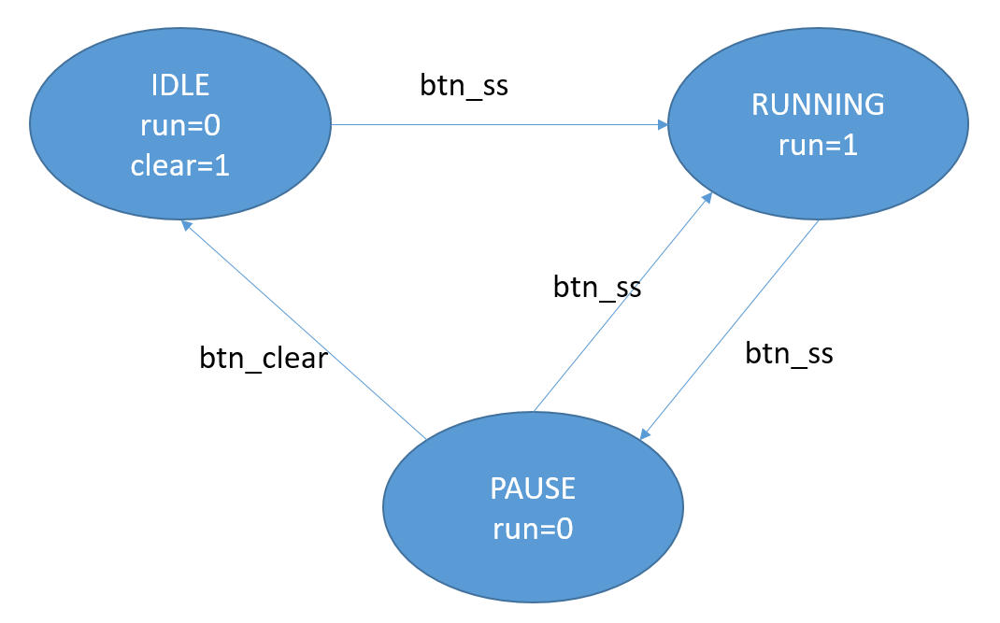

Digital Logic: Integrated Project II—Display and Control
Objectives
- Connect the timing core to the multiplexed display module and show
SS.ccon the seven-segment display. - Add button-debounce and edge-detection modules.
- Implement a stopwatch finite state machine (FSM) to control start, pause, and clear operations.
- Complete simulation and verification of the stopwatch's core functions.
1. Review and This Week's Tasks
1.1 Modules
clk_div: 100 Hz reference pulse- Four
bcd_countermodules: Counting chain from 00.00 through 99.99
| Module | Function |
|---|---|
dynamic_display |
Display SS.cc on four seven-segment digits |
Two btn_debounce instances |
Debounce two buttons |
Two edge_detect instances |
Detect button edges |
stopwatch_ctrl |
State-machine control |
2. Connecting the Multiplexed Display
Connect the four BCD count values to dynamic_display:
dynamic_display u_disp (
.clk(clk), .rst_n(rst_n),
.digit3(cnt3), // 秒十位
.digit2(cnt2), // 秒个位
.digit1(cnt1), // 百分秒十位
.digit0(cnt0), // 百分秒个位
.dp_in(4'b0100), // 小数点在 digit2 后面（秒与百分秒之间）
.seg(seg), .an(an)
);
The display should now use the XX.XX format.
3. Stopwatch State-Machine Design
3.1 State Definitions
The stopwatch has three states:
| State | Meaning | Behavior |
|---|---|---|
IDLE |
Idle/cleared | Display 00.00 and wait to start |
RUNNING |
Running | Measure elapsed time |
PAUSED |
Paused | Freeze the count; it may be resumed or cleared |
3.2 State-Transition Diagram

btn_ss(Start/Stop button): IDLE→RUNNING, RUNNING→PAUSED, PAUSED→RUNNINGbtn_reset(Reset button): PAUSED→IDLE; effective only while paused
3.3 State-Machine Code
module stopwatch_ctrl (
input clk,
input rst_n,
input btn_ss, // Start/Stop 按键脉冲（已消抖+边沿检测）
input btn_reset, // Reset 按键脉冲（已消抖+边沿检测）
output reg running, // 1 = 计时器运行中
output reg clear // 1 = 清零脉冲（单周期）
);
// 状态定义
localparam S_IDLE = 2'd0;
localparam S_RUNNING = 2'd1;
localparam S_PAUSED = 2'd2;
reg [1:0] state, next_state;
// 第一段：状态寄存器
always @(posedge clk or negedge rst_n) begin
if (!rst_n)
state <= S_IDLE;
else
state <= next_state;
end
// 第二段：次态逻辑
always @(*) begin
next_state = state;
case (state)
S_IDLE: begin
if (btn_ss)
next_state = S_RUNNING;
end
S_RUNNING: begin
if (btn_ss)
next_state = S_PAUSED;
end
S_PAUSED: begin
if (btn_ss)
next_state = S_RUNNING;
else if (btn_reset)
next_state = S_IDLE;
end
default: next_state = S_IDLE;
endcase
end
// 第三段：输出逻辑
always @(*) begin
running = 1'b0;
clear = 1'b0;
case (state)
S_IDLE: clear = 1'b0; // 空闲状态
S_RUNNING: running = 1'b1; // 运行中
S_PAUSED: clear = btn_reset; // 暂停时按reset产生清零
default: ;
endcase
end
endmodule
3.4 Using the Control Signals
The state machine produces two control signals:
runningcontrols whether the counters increment:
// 修改计数器的使能：只在 running 时计数
bcd_counter u_cs0 (
.clk(clk), .rst_n(~clear), .en(tick_100hz & running),
.cnt(cnt0), .carry(carry0)
);
clearclears all counters:
// 清零信号连接到计数器的 rst_n 端
wire counter_rst_n = rst_n & ~clear;
bcd_counter u_cs0 (
.clk(clk), .rst_n(counter_rst_n), .en(tick_100hz & running),
...
);
4. Button Processing
4.1 Debouncing and Edge Detection for Two Buttons
// ---- Start/Stop 按键 ----
wire btn_ss_clean, btn_ss_pulse;
btn_debounce u_deb_ss (
.clk(clk), .rst_n(rst_n),
.btn_in(btn_ss_raw), .btn_out(btn_ss_clean)
);
edge_detect u_edge_ss (
.clk(clk), .rst_n(rst_n),
.sig_in(btn_ss_clean),
.pos_edge(btn_ss_pulse), .neg_edge()
);
// ---- Reset 按键 ----
wire btn_rst_clean, btn_rst_pulse;
btn_debounce u_deb_rst (
.clk(clk), .rst_n(rst_n),
.btn_in(btn_rst_raw), .btn_out(btn_rst_clean)
);
edge_detect u_edge_rst (
.clk(clk), .rst_n(rst_n),
.sig_in(btn_rst_clean),
.pos_edge(btn_rst_pulse), .neg_edge()
);
4.2 Connecting the State Machine
stopwatch_ctrl u_ctrl (
.clk(clk), .rst_n(rst_n),
.btn_ss(btn_ss_pulse),
.btn_reset(btn_rst_pulse),
.running(running),
.clear(clear)
);
5. Laboratory Tasks for This Week (Complete Independently; Not Checked in Class)
Step 1: Reuse Existing Modules
Add the following files to the project, including the files from earlier exercises:
clk_div.vbcd_counter.vdynamic_display.vbtn_debounce.vedge_detect.v
Step 2: Write stopwatch_ctrl.v
Implement the stopwatch state machine using the code in Section 3 as a reference.
Step 3: Write a Temporary Top-Level Module
Connect all modules. This does not yet need to be the final stopwatch_top; a temporary top-level may be used for testing:
module stopwatch_test (
input clk,
input rst_n,
input btn_ss,
input btn_reset,
output [7:0] seg,
output [3:0] an
);
wire tick_100hz, running, clear;
wire counter_rst_n = rst_n & ~clear;
wire btn_ss_pulse, btn_rst_pulse;
wire btn_ss_clean, btn_rst_clean;
wire carry0, carry1, carry2;
wire [3:0] cnt0, cnt1, cnt2, cnt3;
// 分频
clk_div #(.MAX_COUNT(1_000_000)) u_100hz (
.clk(clk), .rst_n(counter_rst_n), .tick(tick_100hz)
);
// 按键处理
btn_debounce u_deb_ss (.clk(clk), .rst_n(rst_n), .btn_in(btn_ss), .btn_out(btn_ss_clean));
edge_detect u_edge_ss (.clk(clk), .rst_n(rst_n), .sig_in(btn_ss_clean), .pos_edge(btn_ss_pulse), .neg_edge());
btn_debounce u_deb_rst (.clk(clk), .rst_n(rst_n), .btn_in(btn_reset), .btn_out(btn_rst_clean));
edge_detect u_edge_rst (.clk(clk), .rst_n(rst_n), .sig_in(btn_rst_clean), .pos_edge(btn_rst_pulse), .neg_edge());
// 状态机
stopwatch_ctrl u_ctrl (
.clk(clk), .rst_n(rst_n),
.btn_ss(btn_ss_pulse), .btn_reset(btn_rst_pulse),
.running(running), .clear(clear)
);
// 计数器链
bcd_counter u_cs0 (.clk(clk), .rst_n(counter_rst_n), .en(tick_100hz & running), .cnt(cnt0), .carry(carry0));
bcd_counter u_cs1 (.clk(clk), .rst_n(counter_rst_n), .en(carry0), .cnt(cnt1), .carry(carry1));
bcd_counter u_s0 (.clk(clk), .rst_n(counter_rst_n), .en(carry1), .cnt(cnt2), .carry(carry2));
bcd_counter u_s1 (.clk(clk), .rst_n(counter_rst_n), .en(carry2), .cnt(cnt3), .carry());
// 显示
dynamic_display u_disp (
.clk(clk), .rst_n(rst_n),
.digit3(cnt3), .digit2(cnt2), .digit1(cnt1), .digit0(cnt0),
.dp_in(4'b0100),
.seg(seg), .an(an)
);
endmodule
Step 4: Simulate and Verify
Verify the following behaviors:
- The initial display is 00.00.
- Pressing
btn_ssstarts the count. - Pressing
btn_ssagain pauses the stopwatch and freezes the count. - Pressing
btn_resetwhile paused clears the display to 00.00. - Pressing
btn_ssagain restarts the stopwatch.
Step 5: Verify on the Board
If time permits, perform preliminary on-board verification. The complete pin constraints and final top-level module will be completed later.